Agent, Sensor
Instana Bootcamp for EL: Replays
Agent¶
Installation¶
How to install Instana Agents in Instana itself.
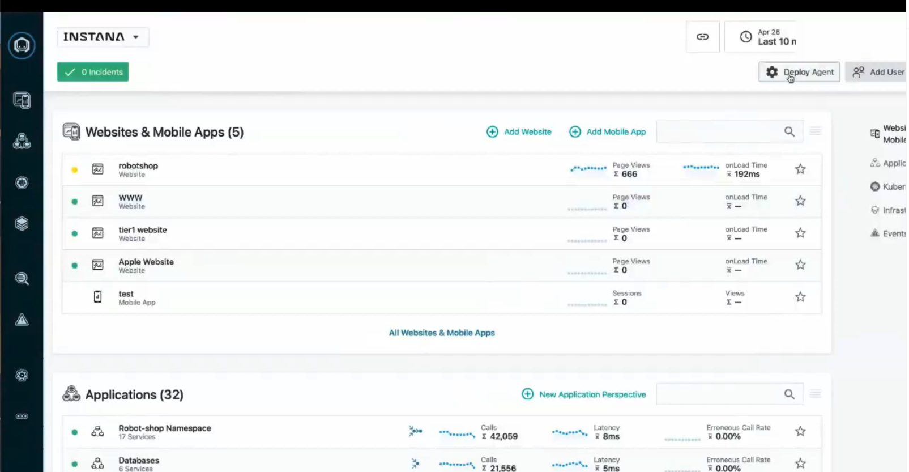 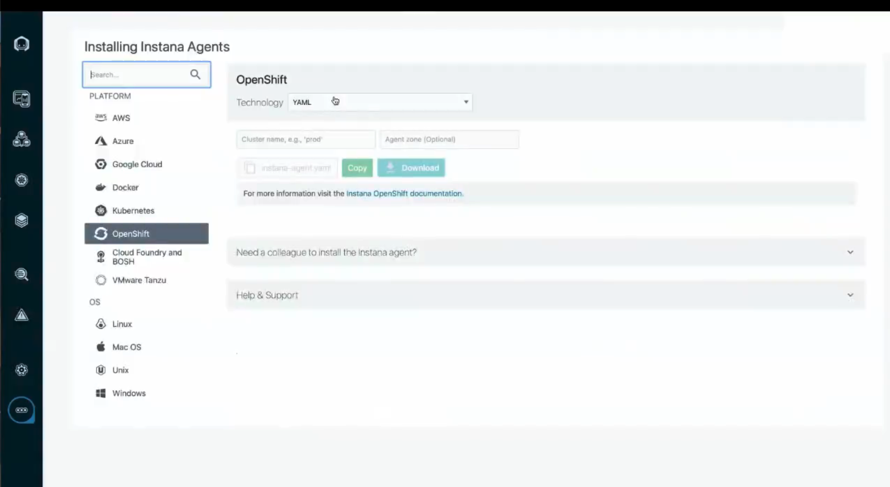
- Mirror the technology in use
- K8S: use the daemonset/operator/helm chart
- Docker: use the Instana Agent Docker container
- Host(e.g. Linux): use the host agent for the OS
- In each case the result will be 1 agent on each host (or worker node)
Agent Modes¶
The agent has the following modes:
- APM (Application Performance Monitoring) License:: FULL traces including application performance AND infrastructure(
INFRA) - INFRA (Infrastructure Monitoring) License: This mode focuses on collecting infrastructure-level metrics and entities, such as CPU usage, memory consumption, and disk I/O. It does not collect application traces.
- OFF: In this mode, the agent runs but does not collect any telemetry data. This is useful when you want to disable monitoring for specific hosts or environments.
telemetry data
"telemetry data"（遥测数据）是一个总称，指的是监控系统自动收集的关于系统、应用程序和基础设施运行状态的数据。举例：
- Application telemetry: HTTP 请求延迟（latency）、吞吐量（throughput）、错误率（error rate）, 调用链（distributed traces / spans）, 数据库查询耗时, 第三方 API 响应时间
- Infrastructure telemetry: CPU 使用率, 内存使用量, 网络 I/O、磁盘 I/O, 容器状态、Pod 状态
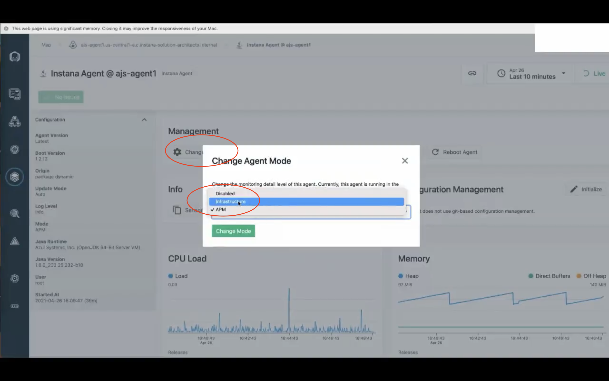
Agent Types¶
| Agent Type | Description | Platforms/Targets |
|---|---|---|
| Host Agents | Collect and aggregate data from sensors; send to Instana backend. * Automatically installs most sensors; some require manual configuration. |
VMs, physical hosts, Kubernetes, Cloud Foundry, VMware Tanzu, etc. --> Install tutorial |
| Cloud Service Agents | Monitor cloud-managed services. | e.g., AWS RDS, Azure subscriptions --> Install tutorial |
| Serverless Agents | Monitor serverless platforms. | e.g., AWS Lambda --> Install tutorial |
| Website & Mobile Agents | Monitor websites and mobile apps. | Web and mobile platforms --> Install tutorial |
Serverless
“Serverless”（无服务器）这个词在云计算中常常会引起误解。它并不是真的“没有服务器”，而是指开发者不需要配置、维护或扩展服务器。只关注代码本身。
实际上，Serverless 架构仍然依赖服务器，但这些服务器是由云服务提供商（比如 AWS、Azure、Google Cloud）管理的。
Agent Deployment Options¶
Instana Agent Deployment/Configuration Options:
Dynamic |
Static |
|---|---|
| starts with minimal requirements, slowly loads other ONLY when necessary | fixed size from the beginning, has everything |
| - Agent Bootstrap - Sensors loaded dynamically from repository (Instana or Mirrored) - Configurable, scheduled updates - Always on the latest version of Instana + sensors - Can be pinned - Reinstall only required to update the Agent Bootstrap |
- Package includes all sensors - Sensors are already present - Startup time is faster! - Upgrades need a more traditional approach - Perfect for air-gapped and more traditional environments - New install required to bump sensor or bootstrap versions |
Bootstrap
你可以把 “Bootstrap” 理解为 agent 启动时必需的最小核心组件集合，用来“引导”整个代理程序运行起来。
What to choose? Dynamic vs Static
Treat this choice like any other software update strategy, ask yourself these questions:
- What type of environment is it?
- What are the characteristics of the environment?
- Is it change controlled?
- Should it be predictable?
Agent Configuration¶
1. Method: configuration files¶
- Handled using
configuration.yamlandconfiguration*.yaml, eventually they will be parsed again automatically. - Allows for modular configuration using existing automation tooling
Sometimes the configuration file is too big, we could separate the configurations into dedicated files like this:
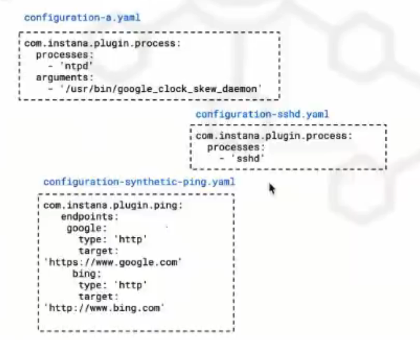
Example: in the directory /opt/instana/agent/etc/instana there are the configuration files. One of them process-monitor.yaml is printed here:
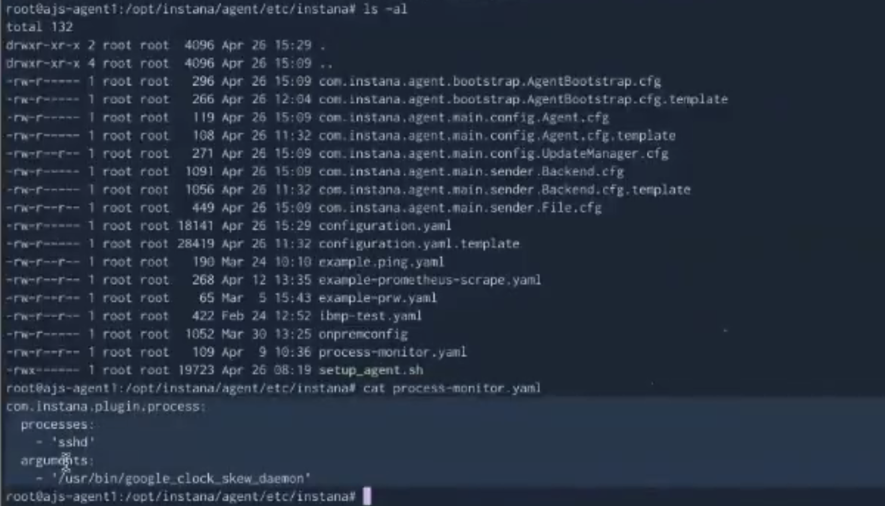
Example: other *.cfg files:
com.instana.agent.main.conf ig.UpdateManager.crg: configuration of update frequencycom.instana.agent.bootstrap.AgentBootstrap.cfg: version of the Instana Agent
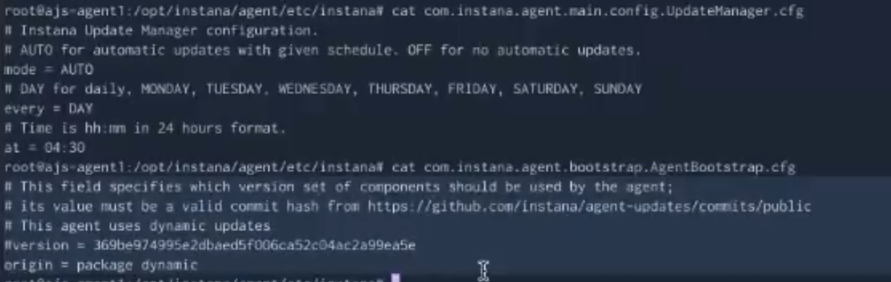
*.cfg
.cfg 文件是程序用来读取初始化配置的纯文本文件，内容格式和用途取决于它服务的程序，常见格式有：
- key = value（键值对）
- INI 格式（包含 section 的结构）
- JSON、XML、YAML 等格式（部分高级场景）
2. Method: GitOps Configurations¶
Instana agents also support GitOps configuration mgmt. 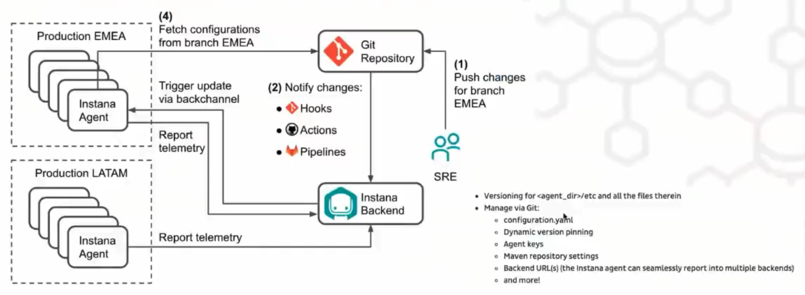
Sensors¶
Sensors are specific modules that are deployed on the agent to monitor particular technologies, services, or aspects of your environment. One Agent can have multiple Sensors
To see which sensors are loaded, and their versions.
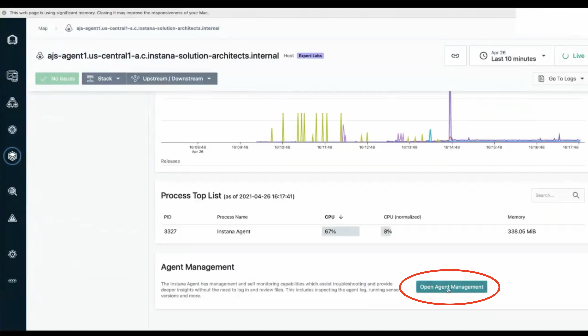 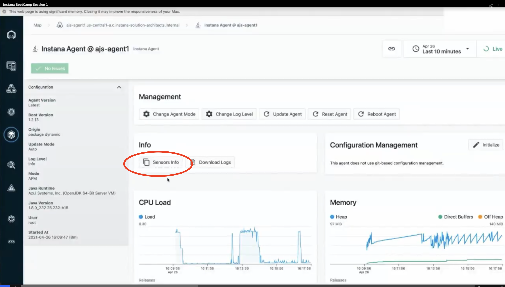
xxx-Discovery are the Sensors that detect whether changes about xxx happens.
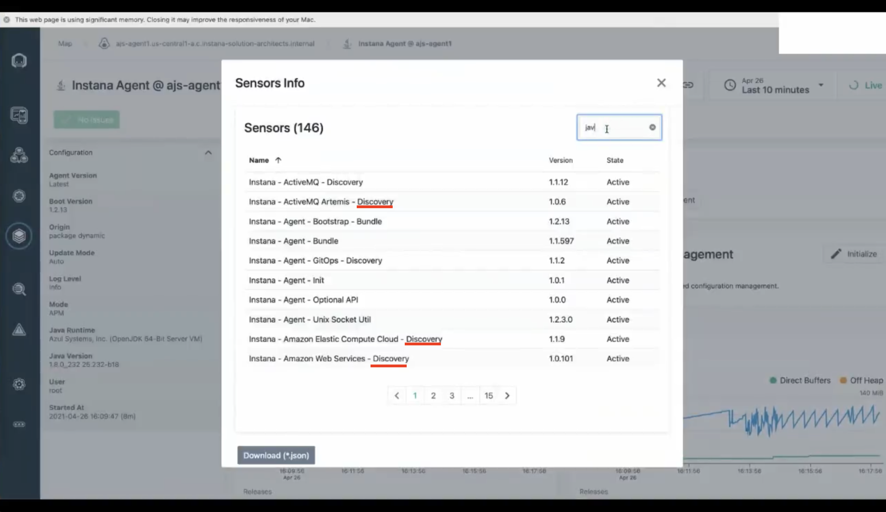
Sensors Configurations¶
- Wherever possible, discovery and configuration is automated
- Further configuration is needed for some sensors
- If locations or configuration cannot be automatically located
- If authentication is required to access stats or metrics
- If Instana's automated process does not work
Demo¶
Spring Boot on K8S 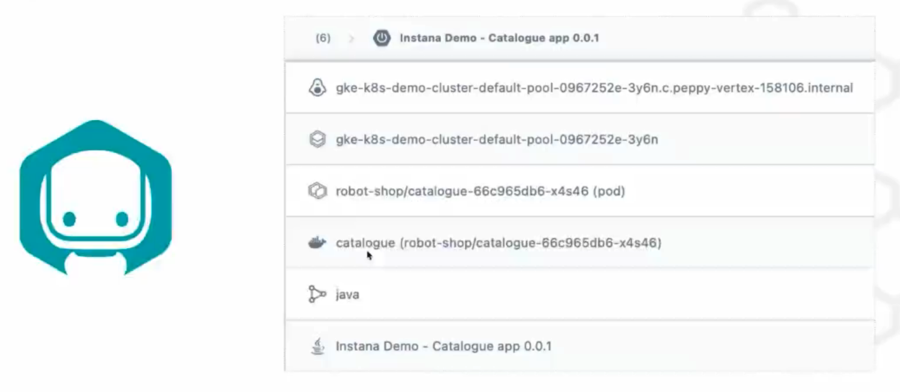
Breaking the stacks down:
- host:
gke-k8s-demo...internal - node:
gke-k8s-demo-...-3y6n - pod:
robot-shop... - container:
catalogue - process:
java - app:
Instana Demo - Catalogue app 0.0.1
Somtimes you needs multiple Sensors for a particular Technology:
- The agent will reach out with its initial instrumentation via
docker execorrunccommands - Sensors will then be loaded in the target environment by the JVM, each with their own line of communication to the Instana agent, for example:
Spring boot sensor (inc. micrometer metrics)Java SensorJava Profile SensorJava Trace Sensor for instrumentation
Troubleshoting¶
Check the following:
- Can the agent talk to the Instana backend?
- If the agent is dynamic, can it talk to the Instana repo (or your mirror)?
- Check proxy set up for both the repo and the backend
- Is the
<agent key>is correct? - Check the
agent.logand useDEBUGMode if needed
Instana Backend¶
Instana backend architecture diagram:
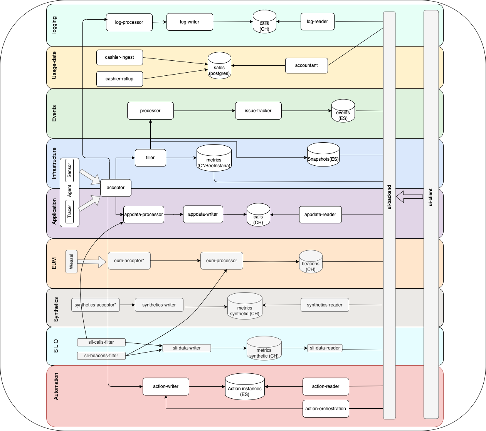
- EUM: End-user monitoring
Infrastructure Map¶
This visual infrastructure map is one of the most important page of Instana 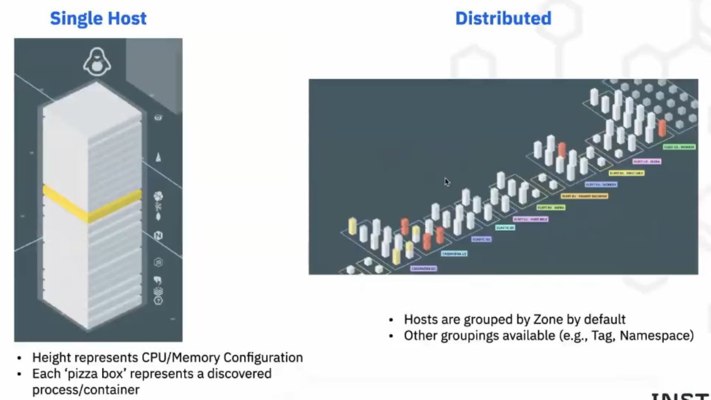
Dynamic Focus Queries¶
Instana uses Lucene query syntax to build complex queries. Tutorial can be found here.
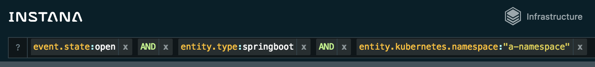
- Metadata from the monitored technology is indexed and made available for searching via Dynamic Focus.
- Dynamic Focus is available for Infrastructure and Events.
- The Lucene query syntax is used for the query language.
- Automatic completion is available in the UI.
Examples
entity.type:php,entity.type:javaentity.tag:nonprodentity.zone:webtestentity.kubernetes.namespace:productionentity.type:elasticsearchORentity.type:cassandraORentity.type:mongodb
Other Resources¶
https://instana.github.io/openapi/#section/Overview
https://www.ibm.com/docs/en/instana-observability/current
Glossary¶
- FQDN: Fully Qualified Domain Name. It is the fullest possible domain name of a host or a computer, on the internet.